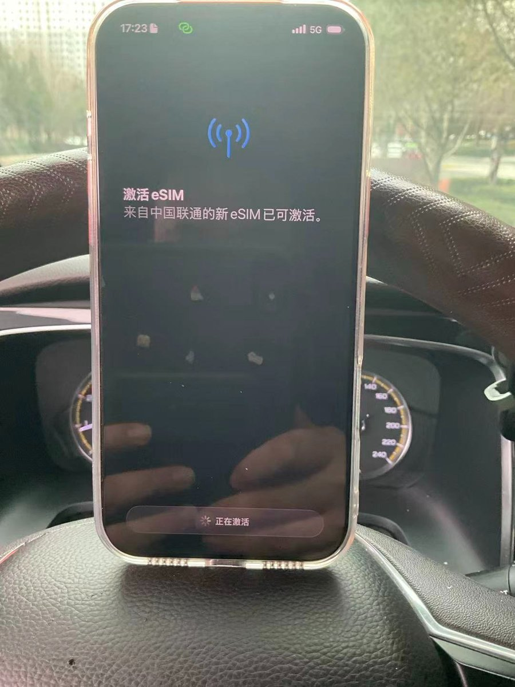
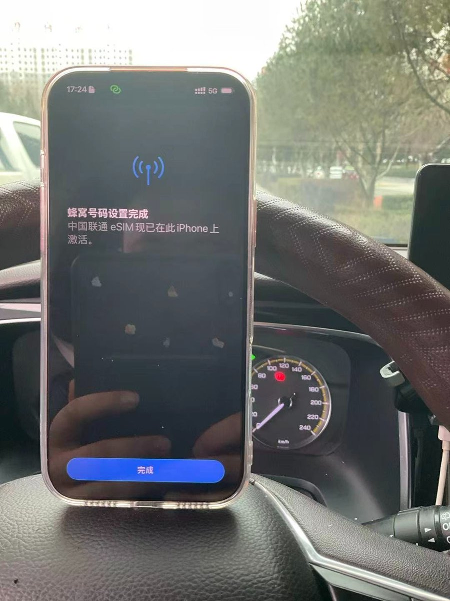
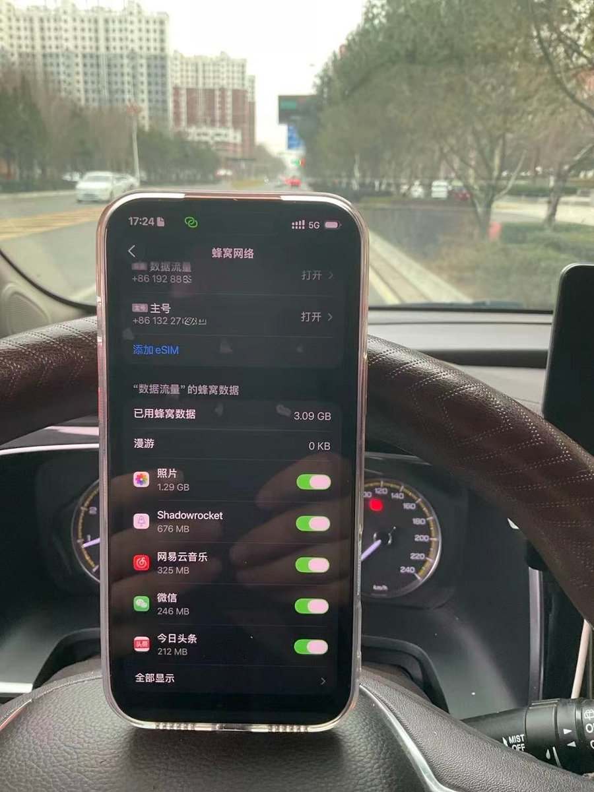
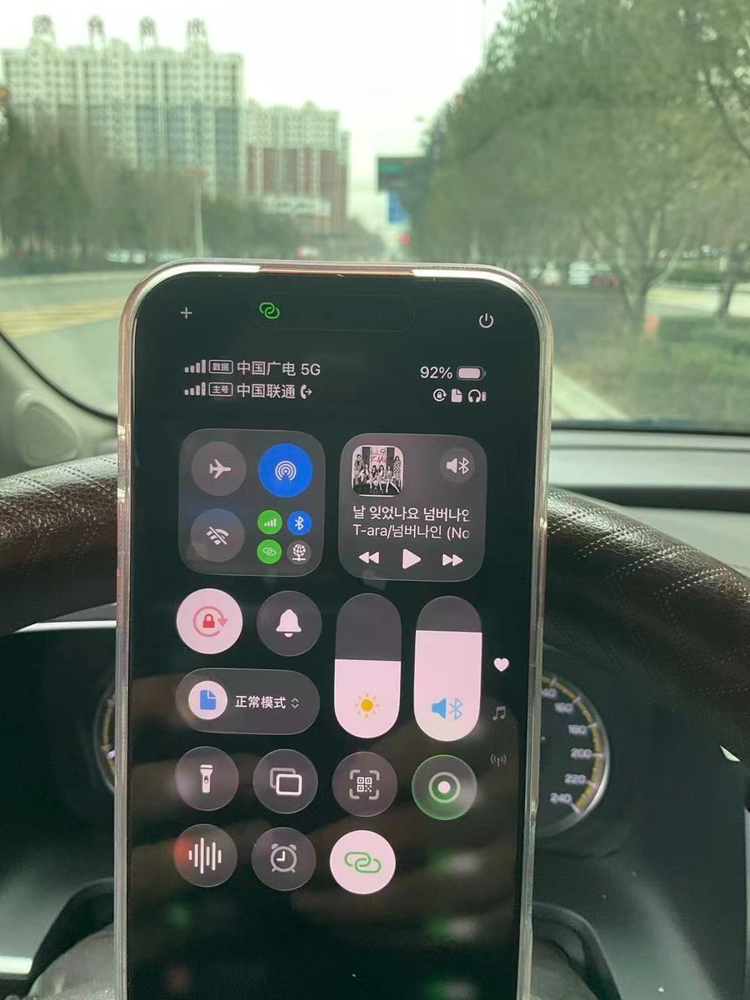

奶友实测给外版iPhone写入国内运营商eSIM，需要邮寄原电话卡给闲鱼老哥，收到后第二天返回eSIM二维码（GSMA CI）给买家。
能解卡取五码已经很厉害了，居然还能找到有GSMA证书的RSP下卡（SM-DP+）服务器🤯🤯🤯
那位老哥只提供eSIM二维码，因为法律问题不提供解卡得到的五码（ICCID、IMSI、SMSP、KI和OPC）。除了KI和OPC，其他三个参数用手机就能读取。这边稍微解释下，“五码” 是中国大陆运营商（移动、联通、电信）SIM/USIM卡的核心认证数据，相当于电话卡的源码，甚至可以克隆SIM卡（pdd买个测试白卡，填入五码开卡）等非法用途。
查看原贴：https://t.co/NvQUxwHaZN
能解卡取五码已经很厉害了，居然还能找到有GSMA证书的RSP下卡（SM-DP+）服务器🤯🤯🤯
那位老哥只提供eSIM二维码，因为法律问题不提供解卡得到的五码（ICCID、IMSI、SMSP、KI和OPC）。除了KI和OPC，其他三个参数用手机就能读取。这边稍微解释下，“五码” 是中国大陆运营商（移动、联通、电信）SIM/USIM卡的核心认证数据，相当于电话卡的源码，甚至可以克隆SIM卡（pdd买个测试白卡，填入五码开卡）等非法用途。
查看原贴：https://t.co/NvQUxwHaZN



